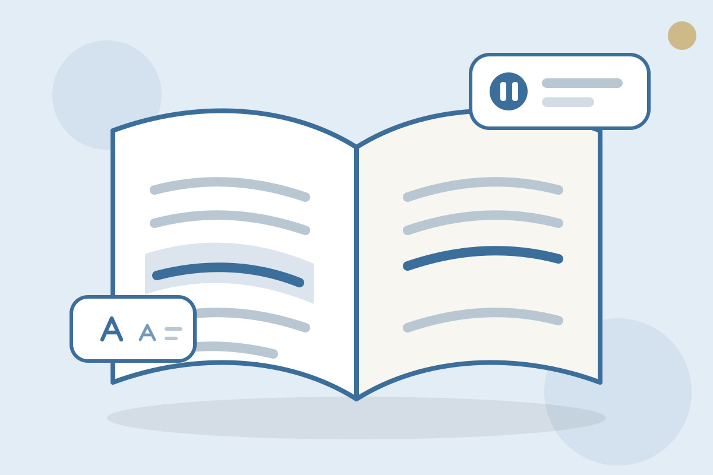
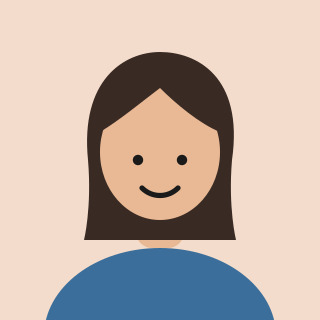
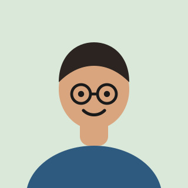
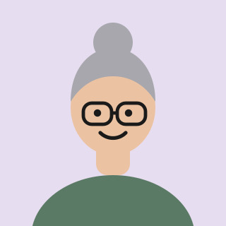
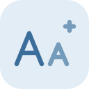

Fragmentación en bloques
El texto largo se divide en partes cortas. Puedes elegir bloques más chicos o más grandes según cómo te sientas ese día.
Extensión de navegador
LectoMente adapta la lectura en pantalla para personas con TDAH y dislexia. Parte el texto en bloques, sugiere pausas y ajusta la tipografía a tu ritmo.

Características
Elige un perfil y revisa lo que más te puede servir.
El texto largo se divide en partes cortas. Puedes elegir bloques más chicos o más grandes según cómo te sientas ese día.
Si llevas mucho rato leyendo, aparece un aviso para descansar. Puedes seguir desde el mismo punto.
Oculta anuncios y menús para que solo quede el texto.
Marca el inicio de cada palabra para que la vista no se pierda en la línea.
Cambia la fuente, el tamaño, el interlineado y el espacio entre palabras. El cambio se ve al instante.
Escucha el texto en velocidad lenta, normal o rápida. Puedes pausar y volver a empezar desde el mismo lugar.
Fondo oscuro o un tono sepia, menta o gris para cansar menos la vista.
Resalta la línea que estás leyendo y puede avanzar sola a la velocidad que elijas.
Tocas una palabra difícil y ves una explicación corta sin salir del texto.
Tus ajustes se guardan y se aplican solos la próxima vez que abras un texto.
Si la persona lo autoriza, el profesional ve el avance y las partes donde más se detuvo.
Muestra cuánto puede durar la lectura y recuerda dónde te quedaste.
Uso
La agregas al navegador en unos segundos.
Indicas si te cuesta más la atención, las palabras o ambas. Después puedes cambiarlo.
Abres cualquier página. No tienes que copiar el texto a otra app.
Según cómo lees, cambia bloques, espacio y pausas.
Ves tu progreso y, si quieres, lo compartes con quien te apoya.
Experiencias

“Dividir el texto en bloques cortos me ayuda a terminar lecturas que antes abandonaba.”
Camila R.
Estudiante con TDAH

“El espaciado y el modo oscuro me cansan menos la vista cuando leo durante mucho tiempo.”
Mateo L.
Estudiante con dislexia

“El panel me muestra en qué parte se traba cada estudiante, sin esperar a la siguiente sesión.”
Dra. Rosa M.
Profesional de apoyo
Inclusión
La herramienta y esta página se pensaron para leer con menos esfuerzo.
Fondo crema en lugar de blanco puro, y opción de modo oscuro o tonos suaves.

Tamaño, interlineado y espacio entre palabras se cambian sin recargar la página.
Se puede recorrer con Tab. El elemento activo se marca con un borde claro.
Dudas
Sí, como extensión de Chrome, Firefox, Edge y Opera.
Mira el tiempo, las relecturas y el avance para ajustar bloques, espacio y pausas. No guarda el texto de las páginas.
Sí. Fuente, tamaño, interlineado, modo oscuro, color de fondo y Bionic Reading se guardan en tu perfil.
Está pensada para esas dos dificultades: menos texto de golpe, pausas, letra más clara y menos elementos alrededor.
Solo si aceptas la vinculación. Si la rechazas, no tiene acceso.
No. El perfil guarda tus preferencias y las aplica al abrir un texto nuevo.
Contacto
Si tienes una duda sobre la extensión, deja tu mensaje.
Simulación del curso. No guarda datos ni envía correos.
Instala la extensión y empieza a leer con bloques, voz, pausas y tu propia configuración.
Instalar y configurar mi perfil